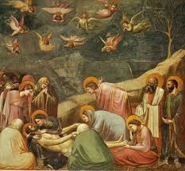

文藝復興初期
文藝復興開始的確切時間各學派的學者都有自己的說法，而「當人們醒悟到自己已經不再活在中世紀的時代裏，這也就是文藝復興開始的時候。」﹝張心龍，1999﹞是最普遍能夠被接受的看法，雖然攏統，卻也明白點出此時期的重要觀念，因中古時期的人們並沒有真正意識到自己生存在世上的價值。
﹝一﹞、喬托
喬托﹝Giotto di Bondone﹞為一名義大利佛羅倫斯藝術家，小時後因偶然展露了他驚人的繪畫天賦，而被另一位鑲崁畫家契馬布耶收為徒弟，此為佛羅倫斯流傳的一則小故事，但根據記載，喬托的老師是另一位名叫彼特羅卡瓦利尼的鑲崁畫家。「喬托風格真貴之處是忠於人文與自然，反對從拜占庭傳來的人工化風格。」﹝張心龍，1999﹞，相較於拜占庭畫派之鑲崁畫的呆版、僵硬，喬托的創作生動許多，以寫實為主的他，將各種物品描繪得栩栩如生，大小比例能相互協調，並且將人喜怒哀樂的表情描繪於畫中，強調自然與人文，是一項偉大的突破。另外，喬托的宗教畫作也較為世俗化，在阿連那禮拜堂的濕壁畫其中一部分「悲慟基督之死」，描繪基督耶穌的身體剛從十字架上拿下，信徒圍繞在祂身旁，不同於中古時期的表現方式，喬托筆下的人物各自顯露出自己的情感，構圖也有敘事性。另一幅名作「聖母登極」畫中的聖母與聖嬰也較生動，披衣上描繪的皺褶亦是平面藝術的一項突破。部分學者主張文藝復興應始於喬托，因他是首位賦予畫中人物情感的畫家。
悲慟耶穌之死
二、波堤切利
波提切利﹝Sandro Botticelli﹞，佛羅倫斯藝術家，所處的年代為十五世紀末期，曾到羅馬替西斯汀教堂作畫，由他監督製作的濕壁畫位在教堂窗戶下的牆壁，但人們的目光往往被天花板上米開朗基羅的作品吸引，而忽略了他的畫作。波提切利最著名的作品非「維納斯的誕生」莫屬，當時波提切利是受了羅倫佐‧梅第奇﹝Medici﹞委託才創作了這項作品，它是一則古希臘羅馬神話，維納斯站在貝殼中從大海中緩緩升起，右邊有另一位女神拿著一件華麗的衣裳想為她披上，整幅圖呈現一種輕飄飄的感覺，雖然這與文藝復興初期重視的透視理論不相符，但不影響整體的視覺感受。另外，當時普遍的作畫內容多為聖經中的人物，但這幅畫卻是以古典神話為主題，「神話不只是傳教，它也是古典時期人們的智慧結晶，他們若想恢復往日羅馬榮光就必須瞭解神話。」﹝章伊秀、邱建一、水瓶子，2010﹞，可以說是擺脫了從前創作總圍繞著宗教的壓抑表現。波提切利的創作幾乎與宗教脫離關係，這是他的特點，亦是往後受到迫害的原因之一。
\
維納斯的誕生